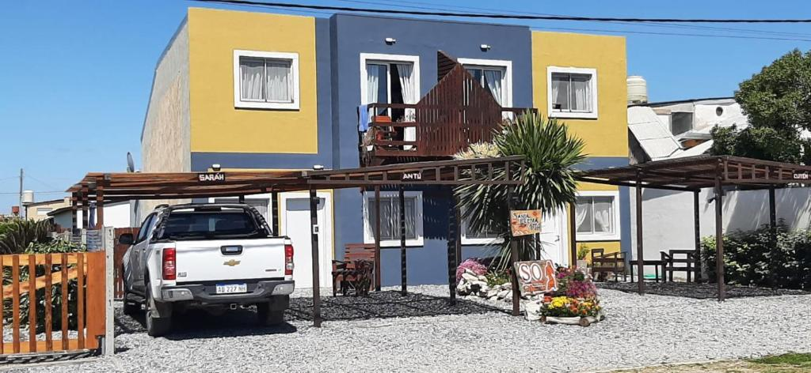
Parque Lago · Mar de Cobo · Buenos Aires
Bienvenido a Sol Querandí.
Frente a la albufera de Mar Chiquita.
A un paso de Mar de Cobo.
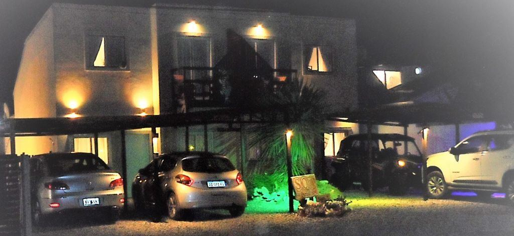
Santa Elena 174
Frente a la reserva
Y Sol Querandí está emplazada justo enfrente.
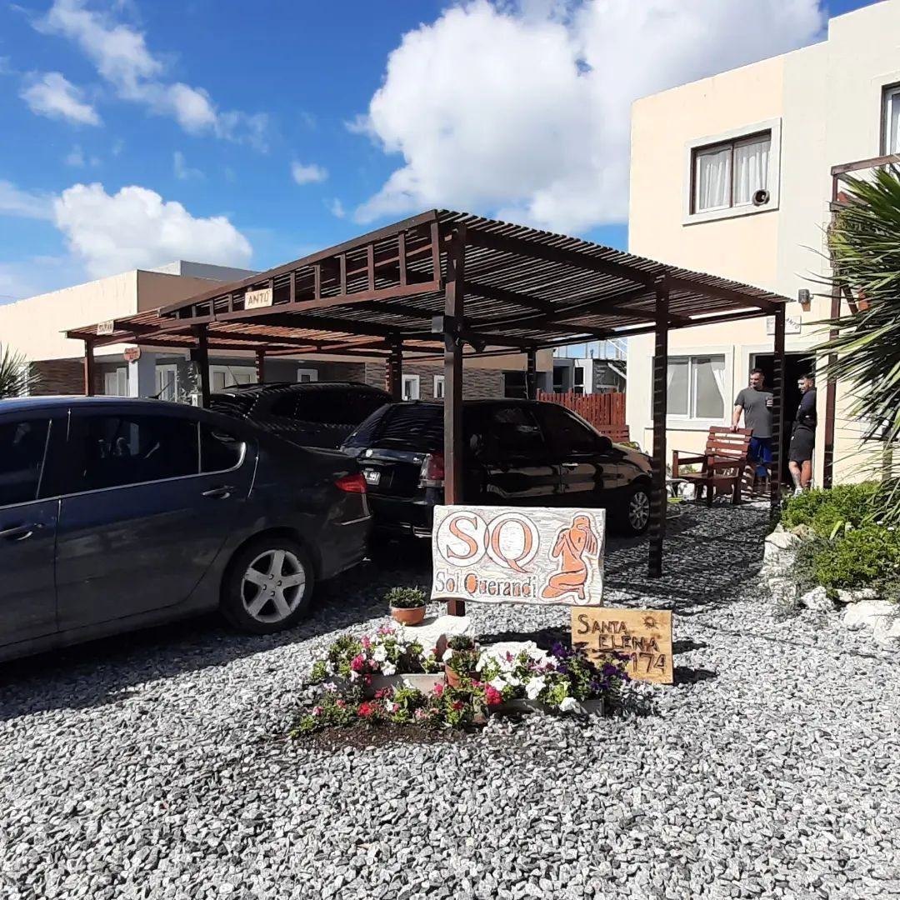
Cuatro kilómetros de playa unen Parque Lago con Mar Chiquita. Se recorren a pie o en vehículo.
Dónde estás parado
A 5 km de Mar Chiquita · A 75 km de Villa Gesell
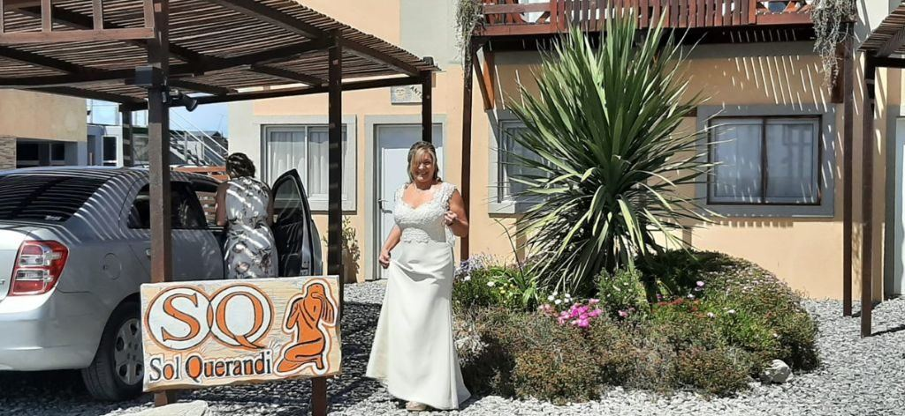
Antú, Cuyen y Saráh.
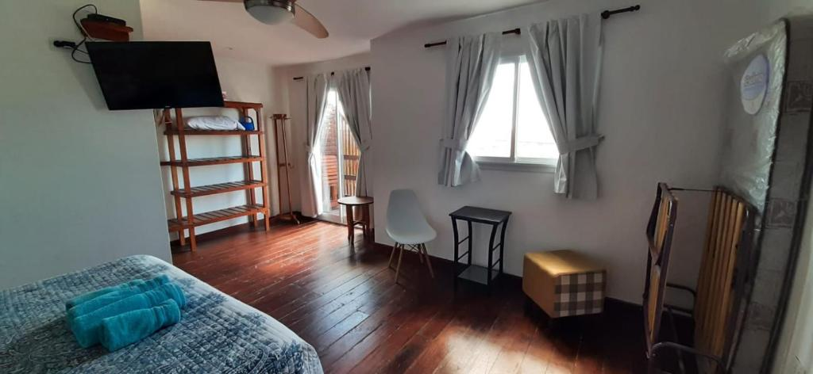
Habitaciones amplias y luminosas, pensadas para desconectar.
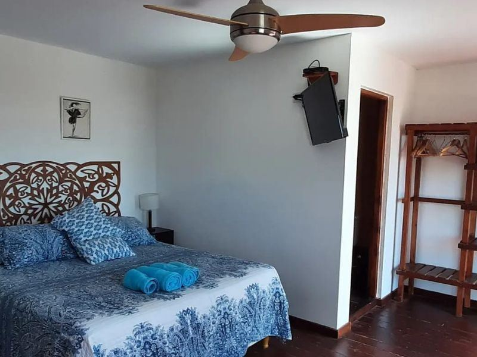
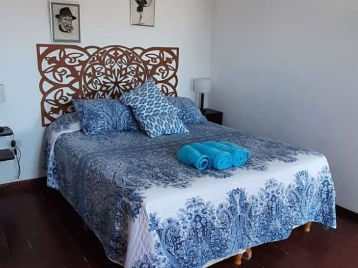
Cabaña 01
Suite matrimonial muy amplia, con baño completo y balcón con vista al mar y a la costa norte hasta Mar Chiquita.
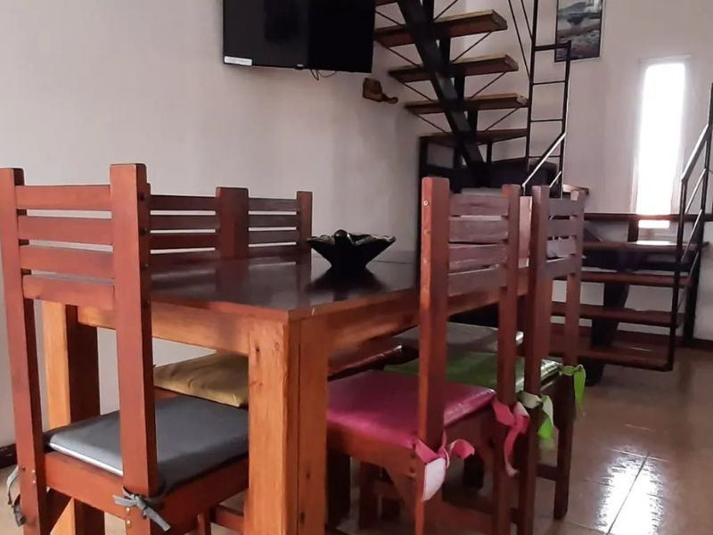
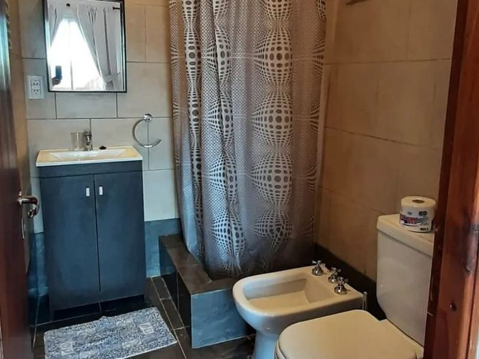
Una habitación para dos personas más un sofá cama y una cama plegable. Otro baño completo en planta baja.
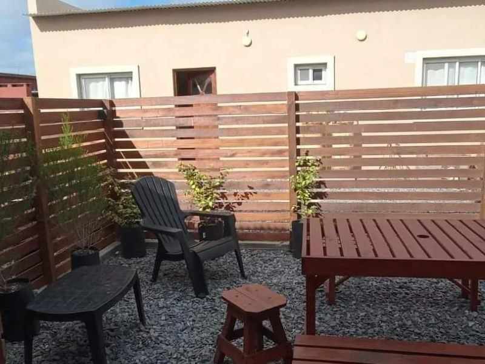
Afuera
Jardín con mesa de madera con bancos y sillones para reposar. Pérgola para dejar el vehículo a la sombra.
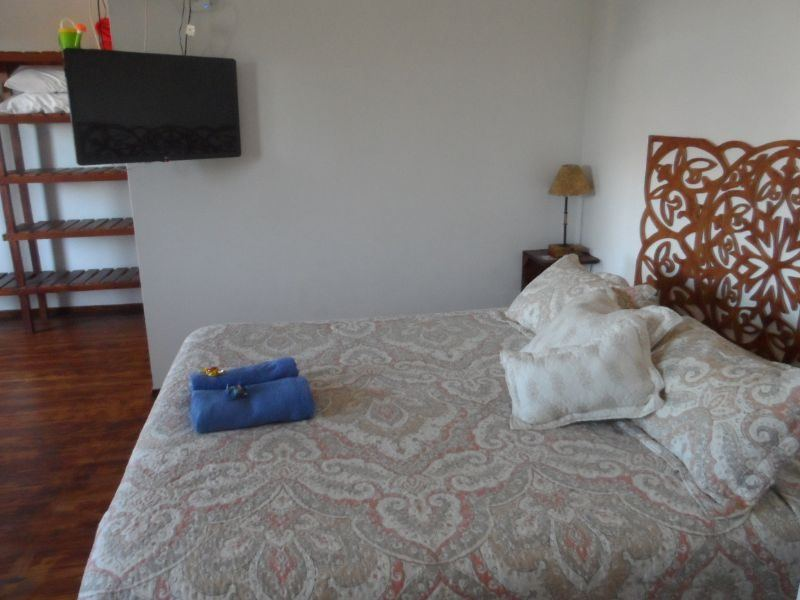
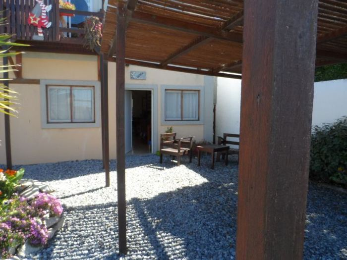
Cabaña 02
La misma suite con balcón al mar, con su patio propio y acceso independiente.
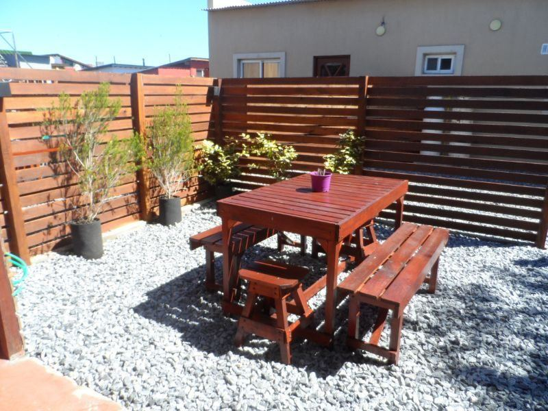
Patio cerrado, jardín propio y el sonido del mar de fondo.
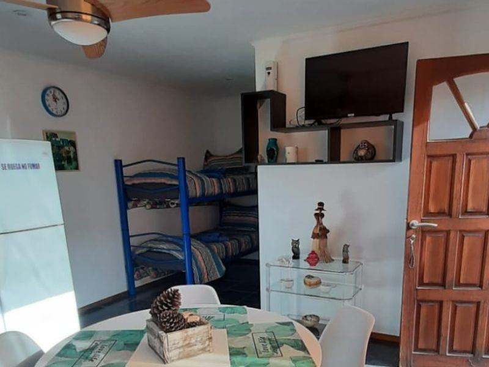
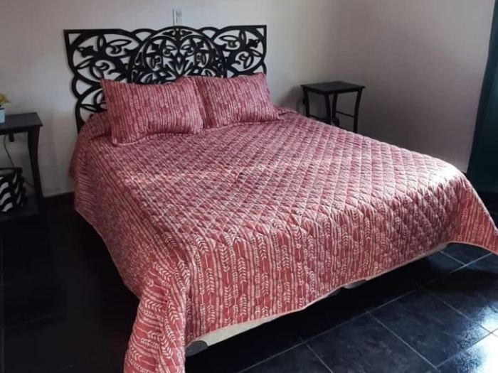
Cabaña 03
Dormitorio muy amplio con cama King de 1,60 m, baño completo y dos camas cuchetas. Se puede sumar una cama plegable.
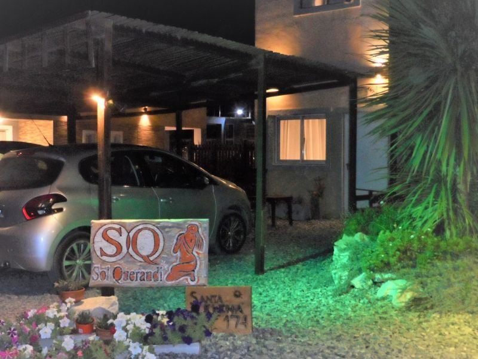
Booking.com · Traveller Review Awards
2023
2026
Índice de respuesta: 100%. Tiempo de respuesta: en pocas horas.
Durante tu estadía
Servicio de limpieza antes del ingreso y ropa blanca incluida.
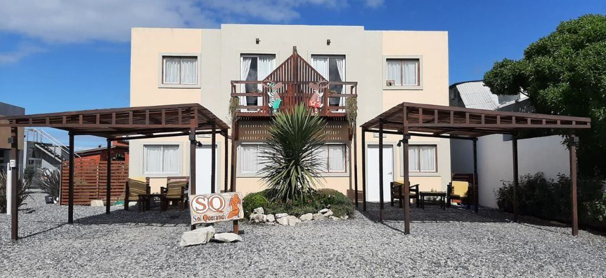
Contanos las fechas y cuántos son. Te respondemos en pocas horas.
Google · Reseñas de huéspedes
Hace 3 años en Google
Hermosas cabañas, con vista al mar y al campo, excelente para descansar. Atendido por sus dueños, super amables y responden enseguida ante cualquier problema. Excelente la limpieza!!! Volvemos siempre, pero hay que reservar con tiempo!!!
Hace 8 meses en Google
Es el lugar perfecto ya que reúne todas las condiciones para disfrutar en el mejor paisaje de mar. Ubicación ideal, instalaciones y equipamiento completos, limpieza 10 puntos, hospitalidad y calidez a toda hora.
Hace 3 meses en Google
Excelente ubicación, al toque de la playa, muy completa la cabaña y todo funcionaba perfectamente que es lo más importante. Francisco y su esposa fueron muy amables durante nuestra estadía y siempre atentos como anfitriones. Más que recomendable!
Hace un año en Google
Un lugar hermoso. Para relajarse y disfrutar de la tranquilidad. Sus dueños muy atentos y amables. El dpto cuenta con todo. Sin dudas, volveremos a ir.
Preguntas frecuentes
En Santa Elena 174, Parque Lago, Mar de Cobo, partido de Mar Chiquita, provincia de Buenos Aires. A cien metros de la playa y frente a la costa.
Sí. Antú y Cuyen tienen balcón con vista al mar y a la costa norte hasta Mar Chiquita. Las tres están a cien metros de la playa.
La playa está a cien metros de las cabañas. El centro de Mar de Cobo queda a 700 metros, y Mar del Plata a 30 kilómetros.
Tres cabañas: Antú (6 personas), Cuyen (6 personas) y Saráh (4 personas). Todas con cocina equipada, WiFi y DirecTV.
Sol Querandí está frente a la albufera de Mar Chiquita, patrimonio de la Unesco. Se puede tomar sol, pescar, remar en kayak, surfear y hacer kite a lo largo de los cuatro kilómetros de playa que unen Parque Lago con Mar Chiquita.
9,7 sobre 10 en el Traveller Review Award 2023 y 10,0 sobre 10 en 2026: la misma atención y calidad de servicio, año tras año.
Por WhatsApp al +54 9 223 529-0743 o por email a solquerandi@gmail.com. El índice de respuesta es del 100%, en pocas horas.